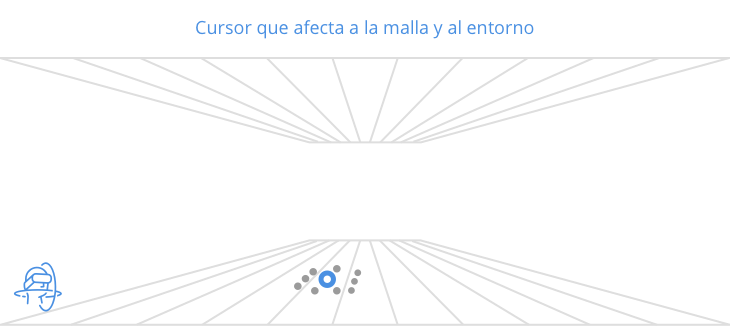

Cursores
Cursor de visión o gaze-pointer
El gaze-pointer o puntero de mirada, es el puntero que el usuario controla con su orientación de cabeza e interactúa con objetos o elementos de interfaz de usuario como lo harían con un puntero del ratón. El evento "clic" puede venir desde un botón de gamepad o toque en el touchpad de Gear VR.

Cursor de visión con rastro

Contexto
¿Que problema resuelve?
Mejora el seguimiento del cursor mientras el usario navega con el control de mirada.
Solución
Dotar a el cursor de un rastro de partucilas cuando está en movimiento.
Diseño
Ver ejemplo. Video
Ver ejemplo. WEBGL
Cursor que afecta a la malla y al entorno
Otra manera de dejar rastro es que el cursor interactue por defecto con el entorno afectando a la malla y al entorno. Esto depende mucho del contexto pero puede ayudar a crear experiencias muy interesantes e inmersivas (cesped, agua, mallas, arena, fichas)
Contexto
¿Que problema resuelve?
Mejora el seguimiento del cursor mientras el usario navega con el control de mirada.
Solución
Dotar a el cursor de un rastro de partucilas cuando está en movimiento.
Diseño
Ver ejemplo. Video
Ver ejemplo. WEBGL